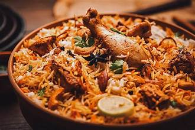

Biryani — The Pride of Pakistan
Biryani is one of Pakistan’s most celebrated and beloved dishes, known for its rich spices, aroma, and layered flavor. Originating from South Asian Mughal cuisine, Pakistani Biryani is typically made with basmati rice, marinated meat (usually chicken or beef), and a variety of spices including saffron, cloves, cardamom, and cinnamon.
What sets Pakistani Biryani apart is its bold flavor and regional variations — such as Karachi-style, Lahori, and Sindhi Biryani. It is often accompanied by raita (yogurt dip), salad, and a boiled egg. Whether served at weddings, festivals, or family dinners, biryani represents a blend of history, culture, and taste in every bite.